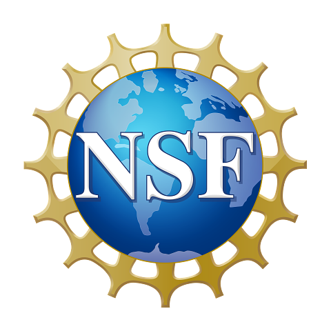

¹In the study of the cohomology of algebraic varieties, there are two different "directions" in play: the "German direction," where one considers the coefficients of the equations defining an algebraic variety as varying in a family, and the "Australian direction," where one considers the coefficients of the cohomology theory itself as varying in a family. This terminology was introduced by Laurent Fargues [F] (in his talk at the 2015 summer algebraic geometry institute in Salt Lake City!) in the context of moduli of p-divisible groups to compare and contrast the moduli problems studied by Kisin with those studied by Rapoport and Zink. A broader comparison of these two directions has been emphasized, among other places, in Scholze's 2018 ICM talk [S], and has since grown into a useful dichotomy for understanding the many recent advances in the field, including the fundamental contributions of Emerton and Kisin. In this conference, we interpret the term "Australian direction" more expansively as including all areas of mathematics where the mathematicians Emerton and Kisin have made significant contributions.
[F] Laurent Fargues. From local class field to the curve and vice versa. In Algebraic geometry: Salt Lake City 2015, volume 97.2 of Proc. Sympos. Pure Math., pages 181-198. Amer. Math. Soc., Providence, RI, 2018.
[S] Peter Scholze. p-adic geometry. Proceedings of the ICM 2018.
²Matt and Mark, still spring chickens, are both turning 55 in 2026. But, together that makes 110! So, we're either a bit early or very late. And did you know that Benson Farb, perennial foil to Mark and Matt, even had a conference when he turned 50?
³Four of the national parks in Utah (Arches, Canyonlands, Capitol Reef, and Zion) can get quite hot in August, but Bryce Canyon (Utah) and Great Basin (Nevada) are at a higher altitude and typically still nice. Grand Teton and Yellowstone in Idaho/Montana/Wyoming should be beautiful, though crowded. There are also many other nearby state parks and natural destinations that will be less crowded than national parks (we recommend, e.g., the Sawtooth mountains in Idaho).